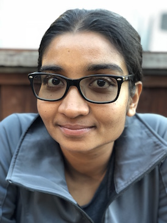

<!DOCTYPE html 
     PUBLIC "-//W3C//DTD XHTML 1.0 Strict//EN"
    "http://www.w3.org/TR/xhtml1/DTD/xhtml1-strict.dtd">
<html xmlns="http://www.w3.org/1999/xhtml" xml:lang="en" lang="en">


<head>
  
<title>Vasu Raman</title>
<meta name="Vasu Raman is a Robotics Researcher based in San Francisco." content="" />
<meta name="google-site-verification" content="-7qZnnAWS5Dp4S7IMyEi_Xs3WGrOBs9PqF0z1d5eYks" />

<link href="style.css" rel="stylesheet" type="text/css" />
<meta http-equiv="content-type" content="text/html; charset=utf-8" />

<script>
  (function(i,s,o,g,r,a,m){i['GoogleAnalyticsObject']=r;i[r]=i[r]||function(){
  (i[r].q=i[r].q||[]).push(arguments)},i[r].l=1*new Date();a=s.createElement(o),
  m=s.getElementsByTagName(o)[0];a.async=1;a.src=g;m.parentNode.insertBefore(a,m)
  })(window,document,'script','//www.google-analytics.com/analytics.js','ga');

  ga('create', 'UA-49573602-1', 'auto');
  ga('send', 'pageview');

</script>


</head>
<body>    
<div id="wrapper">              
  <div id="header">
    <table border=0 width=100%>
      <tr>
        <td><h1><a href="index.html">Vasu Raman</a></h1></td>


   
	   <td align="right">
		
		[vasumathi.raman AT gmail]
		
		<p>
		  <b><font size="5"><a href="vraman_CV.pdf"target="blank"></a></font></b>
		  <a href="http://twitter.com/likeavass" target="blank"></a>
		  <a href="https://www.linkedin.com/in/vasumathi-raman/" target="blank"></a>
	   </td>
      </tr>
    </table>
  </div>
  
  <div id="menu">
    <h2><a href ="#"><span class="currentLink">About Me</span></a></h2>
    <h2> <a href = "projects.html">Projects</a></h2>
    <h2><a href="#pubs">Publications</a></h2>
    <h2><a href="tools.html">Tools</a></h2>
    <h2><a href="index.html#misc">Misc.</a></h2>
    <h2><a href="contact.html">Contact</a></h2>	
  </div>

  <div id="content">
  <table cellpadding=8>
    <tr>      
      <td width="30%" align="center" style="vertical-align: top;"></td>
      <td>
	 I am a roboticist based in the San Francisco Bay Area. Previously, I was a Senior Scientist at the the United Technologies Research Center in Berkeley, CA, and a <a href="http://www.cms.caltech.edu/">Computing and Mathematical Sciences</a> postdoctoral scholar at the <a href="http://www.caltech.edu/">California Institute of Technology</a>,
	 where I worked with <a href="http://www.cds.caltech.edu/~murray/">Richard Murray</a> and <a href="http://www.eecs.berkeley.edu/~sseshia/">Sanjit Seshia</a>.
	 <p><p>
	 <!--My research explores algorithmic methods for designing and controlling autonomous systems, combining ideas from hybrid systems and software verification
	 to guarantee correctness with respect to a formal specification. I focus on safety-critical
	 applications involving cyber-physical systems performing complex tasks in adversarial environments, often interacting with a variety of human users.
	 I draw on technical and creative perspectives from hybrid systems, robotics, control and game theory.-->
	 I am interested in algorithms for designing and controlling autonomous systems, guaranteeing correctness with respect to formal specifications. I focus on safety-critical systems performing complex tasks in adversarial environments, interacting with a variety of agents. I draw on technical and creative perspectives from formal methods for software verification, hybrid systems, robotics, control and game theory. 
	 	 
	 <p>I earned a Ph.D. in 2013 from the <a href="http://www.cs.cornell.edu/">Department of Computer Science</a> at
	 <a href="http://www.cornell.edu/">Cornell University</a>, where I was advised by <a href="http://verifiablerobotics.com/">Hadas Kress-Gazit</a>
	 and affiliated with the <a href="http://cornell-asl.org">Autonomous Systems Lab</a> and the
	 <a href="http://ltlmop.github.com/">LTLMoP Project</a>. My <a href="phdthesis.html" target="blank">dissertation</a> addressed challenges
	 in the synthesis of provably correct control for robotics.
	 I also hold a B.A. in Computer Science and Mathematics from <a href = "http://www.wellesley.edu/">Wellesley College</a>.
      </td>
    </tr>
    
    </table>
    <!--<table>
    <tr>
      <td width="45%"></td>
      <td>
	<p><b><h3>Contact Information:</h3></b>		
		  Department of Computing and Mathematical Sciences<br>
		  California Institute of Technology<br>
		  1200 E California Blvd, Mail Code 305-16<br>
		  Pasadena, CA 91125<br>
		  Phone: +1 607 216-8623<br>
		  Email: vasu AT caltech DOT edu
      </td>
    </tr>
    </table>-->
    
    <br>
      <div id="news">
	<h3>News</h3>
	<ul>
	  <li> <b>Nov 8: </b> Paper presented (by Debbie Tsai) at <a href="http://buildsys.acm.org/2017/">BuildSys 2017</a> in Delft, Netherlands.
	  <li> <b>Sept 24: </b>Two papers presented (by <a href="https://cristianvasile.com/">Cristi</a> and <a href="http://cpaxton.github.io/about/">Chris</a>) at <a href="https://www.iros2017.org/">IROS 2017</a> in Vancouver, BC, Canada.
	</ul>
	<i>Recent:</i>
	<ul>
          <lt>
	    <b>July 15: </b>Organized a <a href="http://sites.bu.edu/hyness/rss-tlzoo/">Workshop on Specifying Planning Problems in Robotics</a>, and presented at the <a href="http://www.kavrakilab.org/2017-rss-workshop/">Workshop on Integrated Task and Motion Planning</a> at <a href="http://www.roboticsconference.org/"> RSS 2017</a> in Boston, MA.
	 </ul>
      </div>
      <br>
    <a name="pubs"></a>
    <br>
    <h3>Key Research Projects</h3>
    <ul>
      <li><a href="projects.html#scaling" target="blank">Scalable Task & Motion Planning with Temporal Logic Specifications</a></li>
      <li><a href="projects.html#stl2mpc" target="blank">Model Predictive Control Synthesis from Timed Logics</a></li>
      <li><a href="projects.html#multirobot" target="blank">Provably Correct Control for Collaborative Robot Teams</a></li>
      <li><a href="projects.html#rhc" target="blank">Scaling Receding Horizon Control Synthesis for LTL</a></li>
      <li><a href="projects.html#fastslow" target="blank">Timing Semantics for Controller Synthesis from High-Level Specifications</a></li>
      <li><a href="projects.html#unsynth" target="blank">Explaining Unsynthesizable Specifications For High-Level Robot Behavior</a></li>
      <li><a href="projects.html#zk" target="blank">Epistemic Characterization of Cryptographic Concepts Using Modal Logic</a></li>
      <li><a href="projects.html#others" target="blank">Others</a></li>
    </ul>
     <a name="pubs"></a>
    <h3>Journal Articles</h3>
    <ul>
		
<!--      <li><u>V. Raman</u>, H. Kress-Gazit, <b>Unsynthesizable Cores -- Minimal Explanations for Unsynthesizable High-Level Robot Behaviors</b>, In submission.</li> 
-->

            
	<li> J. A. DeCastro, J. Alonso-Mora, <u>V. Raman</u>, D. Rus and H. Kress-Gazit, <b>Reactive mission and motion planning with deadlock resolution avoiding dynamic obstacles</b>, <i>Autonomous Robots</i>, 2017.
	
	<li> S. Jha, <u>V. Raman</u>, D. Sadigh, S. A. Seshia, <b>Safe Autonomy Under Perception Uncertainty Using Chance-Constrained Temporal Logic</b>, <i>Journal of Automatic Reasoning</i>, 2017.

        <li>C. Lignos, <u>V. Raman</u>, C. Finucane, M. Marcus, H. Kress-Gazit, <b>Provably Correct Reactive Control from Natural Language</b>,  <i>Autonomous Robots</i>, 38(1): 89-105, 2015. <a href="papers/vraman_auro_15.pdf" target="blank">[pdf]</a></li>

	<li><u>V. Raman</u>, N. Piterman, C. Finucane, H. Kress-Gazit, <b>Timing Semantics for Abstraction and Execution of
Synthesized High-Level Robot Control</b>, <i>IEEE Transactions on Robotics</i>, 31(3): 591-604, 2015. <a href="papers/vraman_tro_15.pdf" target="blank">[pdf]</a></li>

	<li><u>V. Raman</u>, H. Kress-Gazit, <b>Explaining Impossible High-Level Robot Behaviors</b>, <i>IEEE Transactions on Robotics</i>, 29(1): 94-104, 2013.     
<a href="papers/vraman_tro_13.pdf" target="blank">[pdf]</a>

  </ul>

<h3>Conference Publications</h3>
<h4>2017</h4>
<ul id="2017">
            <li>D. Tsai, Y. Shoukry, M. K. Lee, <u>V. Raman</u>, <b>Towards a Socially Responsible Smart City: Dynamic Resource Allocation for Smarter Community Service</b>, <i>BuildSys 2017<i>.
            
            <li>C. Vasile, <u>V. Raman</u>, S. Karaman, <b>Sampling-Based Synthesis of Maximally-Satisfying Controllers for Temporal Logic Specifications</b>, <i>IROS 2017</i>.
            <li>C. Paxton, <u>V. Raman</u>, G. Hager, M. Kobilarov, <b>Combining Neural Networks and Tree Search for Task and Motion Planning in Challenging Environments</b>, <i>IROS 2017</i>.
	      
            <li>S. Jha, <u>V. Raman</u>, T. Sahai, A. Pinto, M. Francis, <b>On Learning Sparse Boolean Formulae For Explaining AI Decisions</b>, <i>NFM 2017</i>.

	    </ul>
<h4>2016</h4>
<ul id="2016">
            <li>S. Jha, <u>V. Raman</u>, S. A. Seshia, <b>On ∃ ∀ ∃! Solving: A Case Study on Automated Synthesis of Magic Card Tricks</b>, <i>FMCAD 2016</i>.

	    <li>S. Jha, <u>V. Raman</u>, <b>Towards Automated Synthesis of Stochastic Linear Hybrid Systems Controllers</b>, <i>FORMATS 2016</i>.
	      <a href="">[pdf]</a>
	    <li>R. Ehlers, <u>V. Raman</u>, <b>Slugs: Extensible GR(1) Synthesis (Tool Paper)</b>, <i>CAV 2016</i>.
	      <a href="">[pdf]</a>
	    <li>Y. Wu, <u>V. Raman</u>, S. Lafortune, S. A. Seshia, <b>Obfuscator Synthesis for Privacy and Utility</b>, <i>NFM 2016</i>.
	    <a href="">[pdf]</a>
	    <li>S. Jha, <u>V. Raman</u>, <b>Automated Synthesis of Safe Autonomous Vehicle Control Under Perception Uncertainty</b>, <i>NFM 2016</i>.
	    <a href="">[pdf]</a>

            <li>S. Ghosh, D. Sadigh, P. Nuzzo, <u>V. Raman</u>, A. Donz&eacute;, A. Sangiovanni-Vincentelli, S. S. Sastry, S. A. Seshia, <b>Diagnosis and Repair for Synthesis from Signal Temporal Logic Specifications</b>, <i>HSCC 2016</i>.
	      <a href="papers/vraman_hscc_16.pdf">[pdf]</a>

	    </ul>
<h4>2015</h4>
<ul id="2015">

            <li>J. DeCastro, J. Alonso-Mora, <u>V. Raman</u>, D. Rus, H. Kress-Gazit, <b>Collision-Free Reactive Mission and Motion Planning for Multi-Robot Systems</b>, <i>ISRR 2015</i>.
	      <a href="papers/vraman_isrr_15.pdf">[pdf]</a>
	      
          <li>S. Farahani, <u>V. Raman</u>, R. M. Murray <b>Robust Model Predictive Control for Signal Temporal Logic Synthesis</b>, <i>ADHS 2015</i>.
	      <a href="papers/vraman_adhs_15.pdf">[pdf]</a>
	      
          <li><u>V. Raman</u>, M. F&auml;lt, T. Wongpiromsarn, R. M. Murray, <b>Online Horizon Selection in Receding Horizon Temporal Logic Planning</b>, <i>IROS 2015</i>.
	<a href="papers/vraman_iros_15.pdf">[pdf]</a>
	
        <li>J. DeCastro, <u>V. Raman</u>, H. Kress-Gazit, <b>Dynamics-Driven Adaptive Abstraction for Reactive High-Level Mission and Motion Planning</b>, <i>ICRA 2015</i>.
	<a href="papers/vraman_icra_15.pdf">[pdf]</a>
	
        <li>M. F&auml;lt, <u>V. Raman</u>, R. M. Murray, <b>Variable Elimination for Scalable Receding Horizon Temporal Logic</b>, <i>ACC 2015</i>.
	<a href="papers/vraman_acc_15.pdf">[pdf]</a>
	
        <li><u>V. Raman</u>, A. Donz&eacute;, D. Sadigh, R. M. Murray, S. A. Seshia, <b>Reactive Synthesis from Signal Temporal Logic Specifications</b>, <i>HSCC 2015</i>.
	<a href="papers/vraman_hscc_15_corrected.pdf">[pdf]</a>
	<a href="talks/vraman_talk_hscc15.pdf">[slides]</a>

	</ul>

<h4>2014</h4>
<ul id="2014">
	
	<li><u>V. Raman</u>, A. Donz&eacute;, M. Maasoumy, R. M. Murray, A. Sangiovanni-Vincentelli, S. A. Seshia, <b>Model Predictive Control with Signal Temporal Logic Specifications</b>, <i>CDC 2014</i>.
	<a href="papers/vraman_cdc_14.pdf">[pdf]</a>
	<a href="talks/vraman_talk_cdc14.pdf">[slides]</a>
    
	<li><u>V. Raman</u>, <b>Reactive Switching Protocols for Multi-Robot High-Level Tasks</b>, <i>IROS 2014</i>.
	  <a href="papers/vraman_iros_14.pdf">[pdf]</a>
	  <a href="talks/vraman_talk_iros14.pdf">[slides]</a>
	  <a href="talks/vraman_poster_iros14.pdf">[interactive presentation]</a> 

	
	<li><u>V. Raman</u>, H. Kress-Gazit, <b>Synthesis for Multi-Robot Controllers with Interleaved Motion</b>, <i>ICRA 2014</i>.
	<a href="papers/vraman_icra_14.pdf">[pdf]</a>
	<a href="talks/vraman_talk_icra14.pdf">[slides]</a> 


	</ul>

<h4>2013</h4>
<ul id="2013">
  
	<li><u>V. Raman</u>, H. Kress-Gazit, <b>Toward Minimal Explanations of Unsynthesizability for High-Level Robot Behaviors</b>, <i>IROS 2013</i>.
	<a href="papers/vraman_iros_13.pdf">[pdf]</a>
	<a href="talks/vraman_talk_iros13.pdf">[slides]</a> 

	<li><u>V. Raman</u>, C. Lignos, C. Finucane, M. Marcus, H. Kress-Gazit, <b>Sorry Dave, I'm Afraid I Can't Do That: Explaining Unachievable Robot Tasks Using Natural Language</b>, <i>RSS 2013</i>.
	<a href="papers/vraman_rss_13.pdf">[pdf]</a>
	<a href="talks/vraman_talk_rss13.pdf">[slides]</a> 
	<a href="talks/vraman_poster_rss13.pptx">[poster]</a>    

      <li><u>V. Raman</u>, N. Piterman, H. Kress-Gazit, <b>Provably Correct Continuous Control for High-Level Robot Behaviors with Actions of Arbitrary Execution Durations</b>, <i>ICRA 2013</i>.  
	<a href="papers/vraman_icra_13.pdf">[pdf]</a>

	</ul>

<h4>2012</h4>
<ul id="2012">

   <li><u>V. Raman</u>, C. Finucane, H. Kress-Gazit, <b>Temporal Logic Robot Mission Planning for Slow and Fast Actions</b>, <i>IROS 2012</i>.  
	<a href="papers/vraman_iros12_FS.pdf">[pdf]</a>
	<a href="talks/vraman_talk_irosFS.pdf">[slides]</a>

    <li><u>V. Raman</u>, B. Xu, H. Kress-Gazit, <b>Avoiding Forgetfulness: Structured English Specifications for High-Level Robot Control with Implicit Memory</b>, <i>IROS 2012</i>.      
	<a href="papers/vraman_iros12_M.pdf">[pdf]</a>
	<a href="talks/vraman_talk_irosM.pdf">[slides]</a>

    <li><u>V. Raman</u>, H. Kress-Gazit, <b>Automated feedback for unachievable high-level robot behaviors</b>, <i>ICRA 2012</i>.
	<a href="papers/vraman_icra_12.pdf">[pdf]</a> |
	<a href="talks/vraman_talk_icra12.pdf">[slides]</a> 
	<a href="talks/vraman_shortICRA_vasu_final.mp4">[video]</a>

	</ul>

<h4>2011 and prior</h4>
<ul id="2011 and prior">

    <li><u>V. Raman</u>, H. Kress-Gazit, <b>Analyzing Unsynthesizable Specifications for High-Level Robot Behavior Using LTLMoP</b>, <i>CAV 2011</i>.     
	<a href="papers/vraman_cav_11.pdf">[pdf]</a>
	<a href="talks/vraman_talk_cav.pdf">[slides]</a> 

    <li>J. Halpern, R. Pass, <u>V. Raman</u>, <b>An Epistemic Characterization of Zero Knowledge</b>, <i>TARK 2009</i>.      
	<a href="papers/vraman_tark_09.pdf">[pdf]</a>
	<a href="talks/vraman_slides_tark.pdf">[slides]</a> 
	<a href="talks/vraman_poster_tark.pdf">[poster]</a>           

</ul>

    <h3>Workshop Publications</h3>
<ul>
        <li><u>V. Raman</u>, A. Donz&eacute, M. Maasoumy, <b>Model Predictive Control from Signal Temporal Logic
Specifications: A Case Study (Work in Progress)</b>, <i>CyPhy 2014</i>.
	  <a href="papers/vraman_cyphy_14.pdf">[pdf]</a>
	  <a href="talks/vraman_talk_cyphy14.pdf">[slides]</a> 
    
	<li>R, Ehlers, <u>V. Raman</u>, <b>Low-effort Specification Debugging and Analysis</b>, <i>SYNT 2014</i>.
	  <a href="papers/vraman_synt_14.pdf">[pdf]</a>


    </ul>
    

    <a name="misc"></a>
  <h3>Teaching and Advising</h3>
  <p>I enjoy teaching and mentoring undergraduates, and have actively sought out relevant opportunities in and out of the classroom.

    <ul>
    <li>Instructor for Caltech Advanced Robotics course (ME 132B) <i>(Spring 2015)</i></li>
    <li>Caltech Undergraduate Student Project Advisor <i>(Fall 2013-present)</i></li>
    <li><a
      href="http://www.engineering.cornell.edu/curie">CURIE Academy Teaching Assistant</a> <i>(July 2012)</i></li>
    <li><a href="http://cornell-asl.org">Cornell University Autonomous Systems Lab Student Project Advisor</a> <i>(Fall 2011)</i></li>
    <li>Cornell Computer Science Teaching Assistant: [<a href = "http://www.cs.cornell.edu/courses/CS2110/2009sp/">CS 2110</a>][<a href = "http://www.cs.cornell.edu/courses/CS5846/2010fa/5846-10policy.html">CS 5846</a>]</li>
    <li><a href = "http://new.wellesley.edu/pltc">Wellesley College Pforzheimer Learning and Teaching Center Tutor</a><i>(2004-07)</i></li>
    <li>Caltech Women Mentoring Women Program, Cornell SWE Mentor, Cornell CSGO-ACSU Mentor</li>

	
  
  </ul>


  </p>

 
  <h3>Service</h3>

<p> 
I was Conference Co-Chair and Fundraising Chair for the 2013 Cornell <a href = "http://www.ccmr.cornell.edu/education/eyh/">Expanding Your Horizons</a> Conference. EYH aims to stimulate the interest of young girls in math and science, provide them with female scientist role models, and foster awareness of math and science career opportunities. This is a cause dear to me, and I have been involved since my first year in grad school, in a number of capacities.
</p>

<p>
In the summer of 2011, I ran a communication skills summer course at the MacCormick Secure Center in Brooktondale, NY. MacCormick is a maximum security correctional facility for young men aged 16-21 who have committed violent crimes. Topics covered included techniques for thought organization, and job interview preparation. We worked primarily with young men close to being released, and focused on preparing them to take full advantage of their employment opportunities.
</p>

<p>
I was a founding member of the Cornell University Computer Science Graduate Organization, and served as its Social Chair from 2009-2011, coordinating department-wide graduate student social events several times a semester.
</p>

 <h3>Misc. Interests</h3>

<p>
I enjoy dancing of all sorts, including several forms of partner dancing. I am also trained in Bharatanatyam, and performed with  <a href = "https://www.facebook.com/cornellsitara">Cornell Sitara</a> throughout graduate school; our style is best, if somewhat nebulously, described as South Asian fusion.

<p>
In college, I was a volunteer and instructor for Girls' Lifetime Empowerment and Awareness Program (LEAP), an education program in the Greater Boston area that blends physical skills with self-reflective activities, to foster safety, self-defense and courage in girls, women and their families.
</p>

<p>
I also have a somewhat significant history with College Mock Trial.

</td>
 

  </p>
	</div>
	<div id="footer">
		<p>&copy; 2017 Vasumathi Raman.  Last updated December 17, 2017.</p>
	</div>
   </body>
</html>
